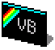
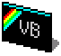

|  | vbSpec ZX Spectrum Emulator |
This site is sponsored by: |
|  | vbSpec ZX Spectrum Emulator |
This site is sponsored by: |
Timex TC2048 Information
As of version 1.30, vbSpec emulates the Timex TC2048 in addition to the various Sinclair Spectrum models (48K,128K,+2). Whilst the TC2048 is almost completely compatible with the standard 48K Spectrum, it offers two very useful new display modes:-
Unfortunately, due to the lack of popularity of the TC2048, there are very few games or demos that take advantage of these modes. However, both myself and Andrew Owen have written some small demos to show off these modes which are available below. To use these snapshots/tape files with vbSpec, you must ensure that you are emulating a TC2048 before opening them (Options->General Settings...->Emulated Model)...
| Filename:
2048dmo1.zip Author: Andrew Owen Description: Slideshow of 5 hi-colour scanned images. |
|
| Filename:
hicols.tzx Author: Chris Cowley Descrpition: Small demonstration of some colour-bar effects using the TC2048 hi-colour display mode. Source Code: vbdemo.asm |